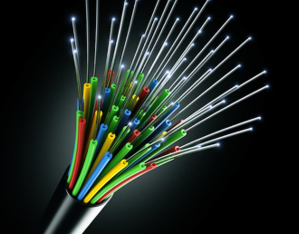
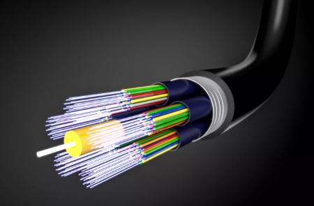

1. Site Name
FiberConnect - Understanding Fiber Optics
The name FiberConnect was selected because it represents the connection between fiber optic technology and modern communication. The website will help visitors understand how fiber optics work and how they support fast and reliable internet connectivity.
Proposed domain: fiberconnect.org
2. FiberConnect Purpose
The purpose of FiberConnect is to provide educational information about fiber optic technology. The website will explain how fiber optics work, the different types of fiber cables, their applications, installation processes, and their benefits in modern communication networks.
The website will provide easy-to-understand information for students, beginners, technology enthusiasts, and anyone interested in learning about fiber optic internet.
3. Scenarios
These are questions that visitors might ask when visiting the website:
- What is fiber optic technology, and how does it work?
- What is the difference between single-mode and multimode fiber?
- What equipment is needed when installing fiber optic cables?
- What are the advantages of fiber optic internet compared to traditional copper cables?
4. Color Scheme
The FiberConnect website will use a blue-based color scheme to represent technology, communication, reliability, and professionalism. Orange will be used to highlight important information and interactive elements.
Dark Blue
#123B5D
Used for headings, navigation, and the website header.
Light Blue
#4EA5D9
Used for links, section highlights, and secondary elements.
Orange
#F2A541
Used for buttons, important highlights, and accents.
Light Grey
#F4F7FA
Used for the main page background and content sections.
5. Typography
Roboto
Roboto will be the main font throughout the FiberConnect website because it is clean, modern, and easy to read on different screen sizes.
Roboto Bold - Headings
Understanding Fiber Optic Technology
Roboto Regular - Body Text
Fiber optic cables transmit information using light signals through thin strands of glass or plastic.
- Headings: Roboto Bold (700).
- Paragraphs: Roboto Regular (400).
- Navigation and buttons: Roboto Medium (500).
6. Wireframes
The wireframes will illustrate the planned layout of the FiberConnect homepage on small and large screens. They will focus on the structure and placement of the navigation, main content, images, and footer before the final visual design is developed.
Small Viewport - Mobile

Mobile homepage layout.
Large Viewport - Desktop

Desktop homepage layout.